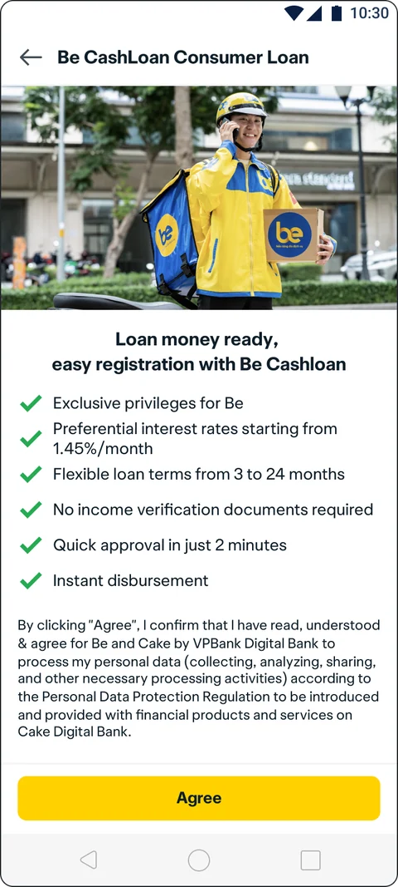
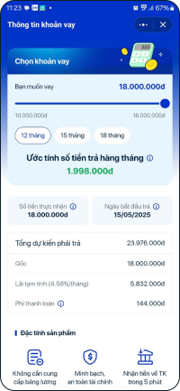
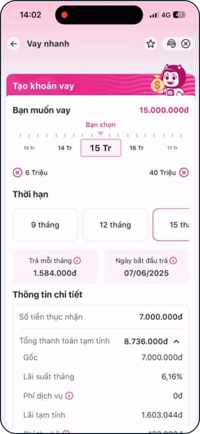
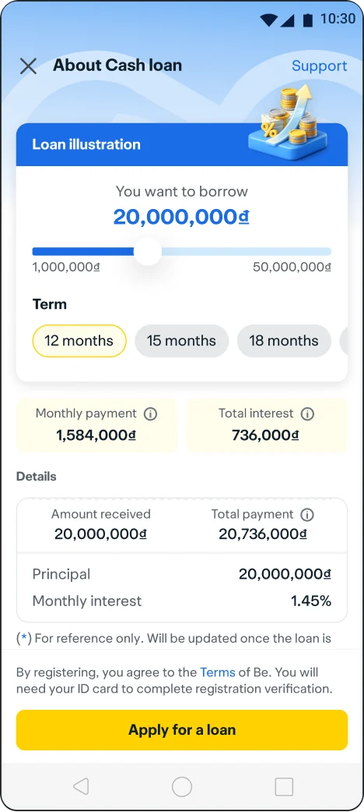
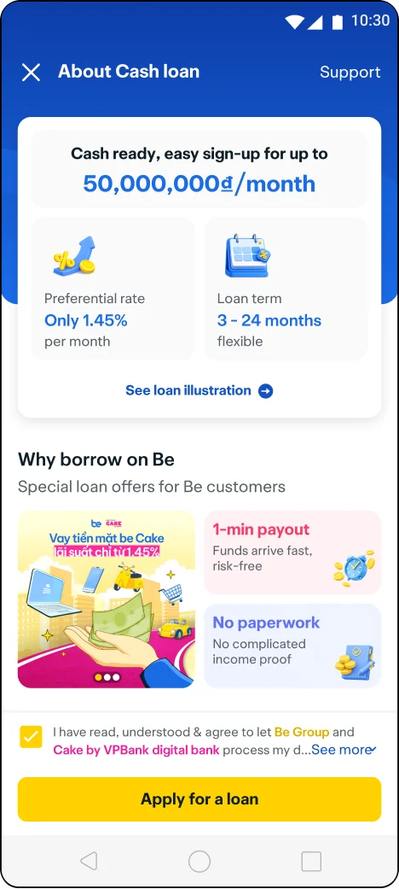
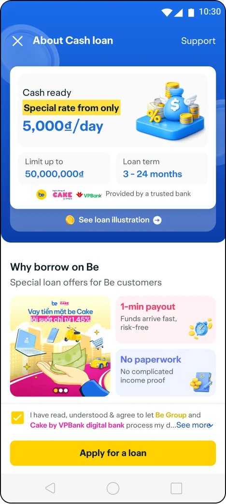
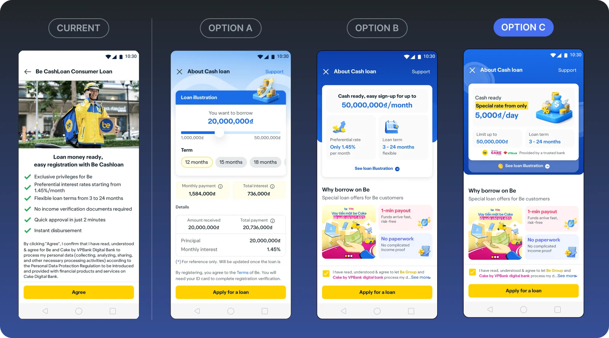
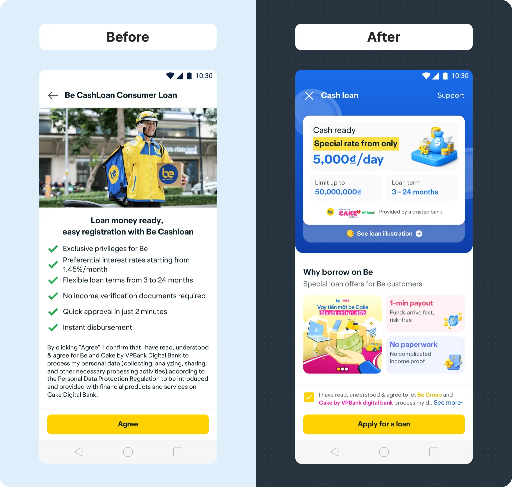
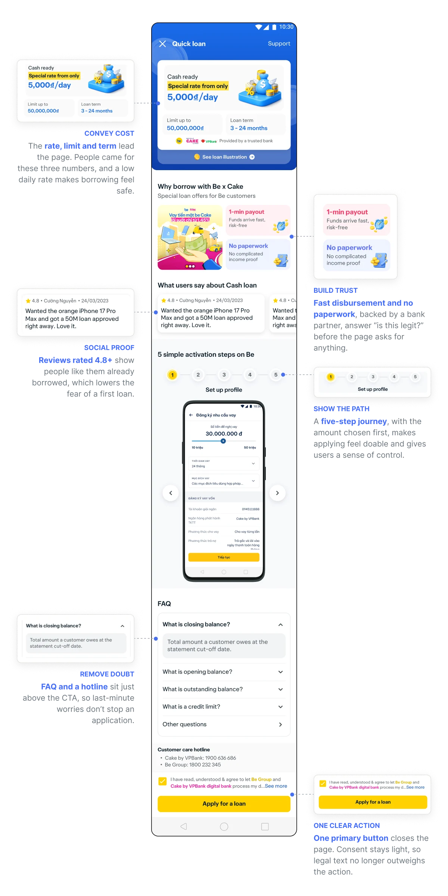
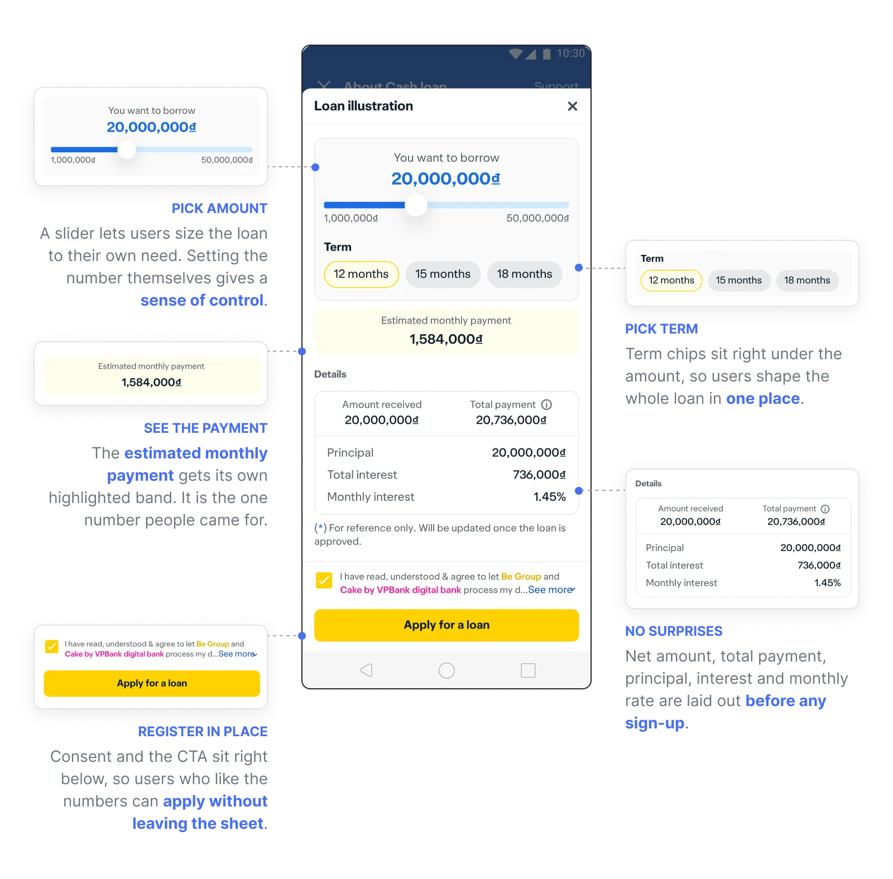

01. The problem
People don't read, they calculate.
Be's lending KPI needed to grow sixfold in a year, with Cash Loan as the main driver. The old page explained the product like a bank: a wall of text and a button.
KPI target
6×
growth needed year over year, with Cash Loan as the main driver of GMV
Submission rate
4.69–7.02%
of users who tapped in went on to submit, despite real intent to borrow

-
No headline numbers
The hero sells the Be brand. How much, what rate and how long are missing.
-
Key info is scattered
Limit, rate and term hide in a six-item checklist that is hard to scan.
-
Weak CTA, heavy legal text
Consent copy dominates the first screen, and “Agree” gives no reason to act.
How might we help users understand and trust the quick loan service from the first view, to increase the conversion rate from onboarding view to loan registration?
02. Research
Everyone leads with the calculator, not the theory.
A teardown of Momo, ZaloPay and ShopeePay showed one pattern: a loan calculator up front, no theory. The heatmap agreed: 20% of clicks went to the calculator, while text-heavy sections pulled only 6–7%.
#Step 1: Competitor teardown


What works
Low cognitive load, a transparent loan model and testimonials that build credibility.
What is missing
First-time borrowers still need an explanation and onboarding to understand the product.
Shared pattern
Rate and limit sit at the top, with an early loan-amount step. The revamp features the rate and moves the calculator into the flow.
#Step 2: Click data
The user demand behind these decisions
Confirmed by triangulating competitor benchmark, PO insight, and revamp data.
Where clicks actually went
People calculate based on their needs.
Text sections got skipped for the one number that mattered.
The actual cost felt scarier than it was.
1.45%/month reads fine — 17.4%/year feels expensive.
People committed before they understood.
A big limit up top pulled them in before the math landed.
03. Key objective
Three Things the Page Had to Do
Objective: Increase the conversion rate from the onboarding screen to loan registration.
01.
Calculator First, Not Last
Replace a page built for reading with a page built for answering the one question everyone actually has: how much, and what do I pay.
02.
Rate Before Limit
Help individuals grasp the true costs before they dive deeper into the process—fewer applications, but those that are more likely to convert and gain approval.
03.
Clear communication
Frame the true cost, and make it as clear as possible so it feels approachable without hiding any part of it because in lending, trust is the product.
04. Architecture
Rebuilt around cost, trust and steps.
The old page was a brochure: hero, heading, checklist, consent, CTA. The new one answers questions in the order users ask them.
Convey cost
Old page: Brand photo and a heading. No rate, limit or term up front.
New page: Hero with interest rate, limit, term and a “View illustration” CTA.
Build trust
Old page: No testimonials or partner proof before the ask.
New page: Promo banner, benefits and testimonials rated 4.8+.
Explain how to apply
Old page: A one-way read. Nothing shows how applying works.
New page: 5-step activation flow, with the loan amount picked in step 1.
Answer questions
Old page: Consent text and a CTA. No FAQ or hotline.
New page: FAQ accordion, hotline and consent before the final CTA.
The biggest shift: cost comes first
05. Design
Three ways to put the numbers first.
I proposed three layouts that all front-load the cost. They differ in what leads: the calculator, the limit or the rate.
1. Propose three options

Calculator-first
The loan calculator sits at the very top, skipping the intro.
Trade-off
Users must “calculate” before they understand the value.
Goal achievement
~40%

Limit as the highlight
“Up to 50,000,000đ” leads, with rate and term in the background.
Trade-off
Very cautious users may need extra touchpoints.
Goal achievement
~70%

Rate as the highlight
“5,000đ a day” leads, with limit and term as secondary info.
Trade-off
Cautious users need an easy path to the full calculator.
Goal achievement
~90%
2. Internal review and A/B testing of the options
After presenting 3 options, the team decided to conduct internal A/B testing, comparing the current version (old) with all 3 newly proposed options. After one week with 20–30 users, Option C went to 100% of users: it builds trust first, then offers the calculator as the closing step.

📉 final result
After 1 week of A/B testing with 20 – 30 users, the team decided to roll out Option C to 100% of users - because the interface of Option C informs users what the product is, why it is trustworthy first, and then presents the loan calculator as a "closing" step.

Results after going into production:
The loan registration click-through rate increased from 48% to 58%.
3. Final design
Option C became the new onboarding page. Each note explains why a block sits where it does, and how it builds the motivation to apply.

4. Using the loan calculator
Tapping “View loan illustration” in the hero opens this sheet in place, so users can test the numbers without leaving the page. The notes follow the order of use.

06. Impact
Shipped April 7, 2026:
More than 375% disbursed applications.
First-step CTR
48% → 58%
Click-through rate from the onboarding screen into registration.
Disbursed · Q2 2026
4,709
disbursed applications from 33,760 submitted, vs 952 in Q4 (+375%).
Disbursement volume
59.75B VND
disbursed in Q2 2026, with the results window running to June.
07. Beyond onboarding
What else I shipped in production.
Onboarding full flow
The end-to-end journey from entry point to loan registration.
Figma link: https://www.figma.com/design/O0thJneOG1dXLNVrvn0rxE/Cashloan-2026--1-?node-id=263-15233&t=iN3MJ8rxOImEEKI0-1
Stepper screen
A stepper that shows the status of every step in the loan process.
Figma link: https://www.figma.com/design/O0thJneOG1dXLNVrvn0rxE/Cashloan-2026--1-?node-id=692-925&t=iCRscydQd6HlW1e4-1
Loan management
Screens to view active and settled loans.
Figma link: https://www.figma.com/design/O0thJneOG1dXLNVrvn0rxE/Cashloan-2026--1-?node-id=832-15329&t=iCRscydQd6HlW1e4-1
Cross-sell entry points
Entry points for users to access Cash Loan in the app.
08. Reflection
What I learned.
-
Lead with the number users came for
The page won when cost, not brand, led. Next time I would start from the user's main question, not the product story.
-
Test the order, not just the visuals
Options A, B and C used the same ingredients. The sequence made the difference, so I would test sequence earlier.